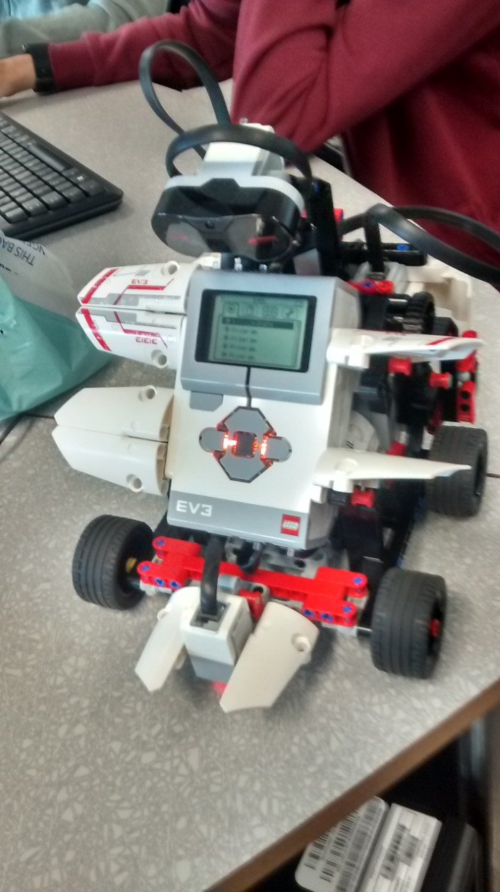
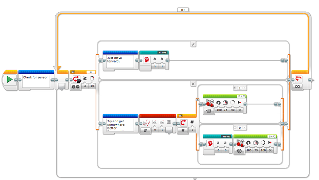

Path Following Robot
Description
This is a group project. It is being built using a Lego Mindstorms EV3, with the goal of using it's color sensor to make it follow a path on the floor. It is also meant to avoid objects in the way using the infrared sensor.
Progress
| Week | Progress |
|---|---|
| 1 | Initial Research. Group started building the robot. I looked into various methods of programming it. |
| 2 | I took the robot home. Wrote some initial code to make it avoid objects. Group prepared a flow chart documenting our initial ideas on the software. |
| 3 | The team got bluetooth to work. We made more progress on getting the color sensor working correctly with calibration. Came up with a better method of making it move and follow the line. |
Photos
Week 2

The built robot. We later removed some of the unneeded parts.

My first version of the object avoiding code. We aim to have
something like this as the outer loop, with the line
following being where the move forward code is now.
Videos
We uploaded videos on this youtube channel